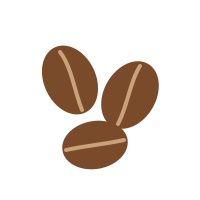

Арабика и робуста: в чем разница
Два главных вида кофе отличаются вкусом, кофеином и условиями выращивания.

В мире известно более сотни видов кофейного дерева, но почти весь кофе, который мы пьем, - это два вида: арабика (Coffea arabica) и робуста (Coffea canephora). На арабику приходится около 60% мирового производства, на робусту - почти все остальное.
Где растут
Арабика любит высокогорье: ее выращивают на высоте от 600 до 2000 метров и выше, в мягком климате без резких перепадов температуры. Робуста растет на равнинах, легче переносит жару и болезни и дает больший урожай. Поэтому робуста дешевле.
Чем отличается вкус
Арабика сложнее и мягче: в ней больше сахаров и ароматических веществ, заметна кислотность, а вкус меняется от ягодного до шоколадного в зависимости от региона. Робуста горче и проще, с древесными и землистыми нотами, но дает плотную пенку на эспрессо.
| Арабика | Робуста | |
|---|---|---|
| Кофеин | около 1,2-1,5% | около 2,2-2,7% |
| Высота выращивания | 600-2000 м и выше | до 800 м |
| Вкус | сладость, кислотность, аромат | горечь, плотность |
| Форма зерна | вытянутая, с изогнутой бороздкой | круглая, с прямой бороздкой |
Что выбрать
Для фильтра, пуровера и чашки без молока берите чистую арабику - так лучше слышен вкус сорта. Для эспрессо и капучино подойдет смесь с небольшой долей робусты: она добавит крепости и пенки.